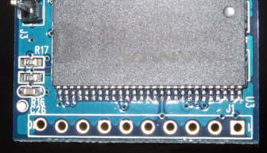
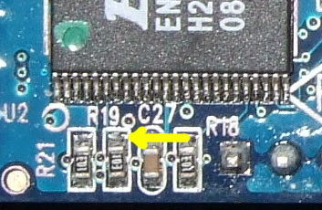
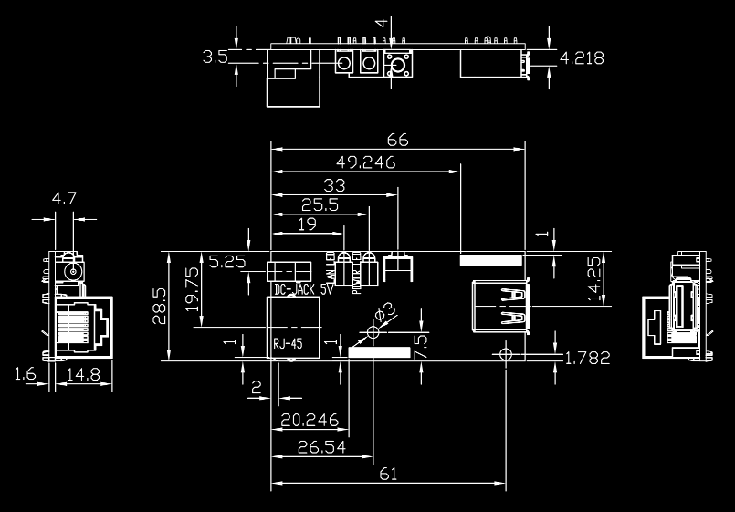

Dimmensions:
J1 is 10-way 0.1 inch (2.54mm) pitch SIL (single-in-line) header. Pin 1 is the square pad (on the right in the picture below).
|
 |
Enabling GPIO on the serial console disconnects the UART from the output pins.
R19 is the JTAG enable pull-up. This is a 10K resistor which pulls the JTAG activation pin high, leaving the JTAG permanently enabled. In the picture the bottom contact connects to +3.3v, the upper contact (yellow arrow) connects to the activation pin. Pulling the activation pin low will disable the JTAG and allow the JTAG pins to be used as GPIO, however a series resistor must be used, since shorting directly to GND will prevent the CPU from booting. Suggested value is 1.2 KOhms.
J2 is a 7-way 0.1 inch pitch SIL, with a male PCB header. It connects to J1 on the IO board.
|
J3 is a 7-way 0.1 inch pitch SIL, with a male PCB header. It connects to J2 on the IO board.
|
Connectors J1 (upper in the picture) and J2 (lower) are 0.1 inch pitch SIL female sockets as described for the CPU board. There are also ethernet, USB and power sockets. The power socket accepts one of the standard 5v wall-wart connectors with 3.5mm outer body and 1.25mm pin. The power socket is identical to some of the sockets found on small powered USB hubs.
The board has two through-hole LEDs. The blue LED indicates power-on, the green network activity. There is also a surface-mount red LED controlled by pin 3 of J1.
Finally, there is a button connected to pin 6 of J2. The pin is pulled high via a pull-up resistor. Pressing the button pulls the pin low.
 Go back